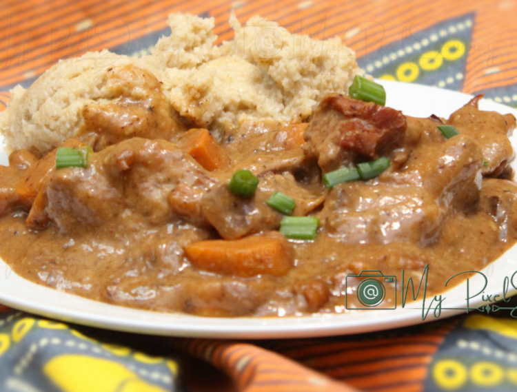

Beef with Odika Sauce

Description
The Odika is a sauce made from the fruit of acacias that looks like a wild
mango with cocoa taste. Called the ‘native chocolate’, seeds are cooked.
Once warm they are pounded. Then, it forms a compact block which can be
stored easily, so just grate it to make the famous chocolate sauce.
Ingredients
- salt
-
2 lbs beef, round steak or stew meat, cut into large bite-sized pieces
-
1 cup ogbono or apon, packaged (available at African import grocery
stores) — or — 12 wild mango kernels, crushed with a mortar and pestle
- 1 cup red palm oil, or any cooking oil
- 2 tomatoes, peeled and chopped
- 1 onion, finely chopped
- 1 tbsp dried shrimp
- cayenne pepper or red pepper (to taste)
Steps
-
In a large pot bring a few cups of salted water to a boil. Add the meat
and cook it for a few minutes. Drain. Remove the meat and set it aside.
-
If using whole wild mango kernels: Heat enough oil nfor pan frying in a
skillet. Add the kernels. Cook on low heat, stirring often. While the
meat-tomato-onion mixture (next step) is simmering, use a potato-masher
(or similar) to crush the wild mango kernels. Keep warm.
-
Heat the remaining oil to the pot the meat was cooked in. Add the
tomato, onion, and dried shrimp. Cook for a few minutes then add the
meat. Reduce heat, cover and simmer for an hour.
-
When the meat is fully cooked and tender to your liking, grate the
ogbono or apon or make sure the the wild mango kernels are well mashed,
and add it to the meat bit by bit, stirring often. Be careful to avoid
forming lumps. Continue to simmer, stirring often, for a few minutes or
until the sauce reaches the desired thickness. Adjust seasoning.